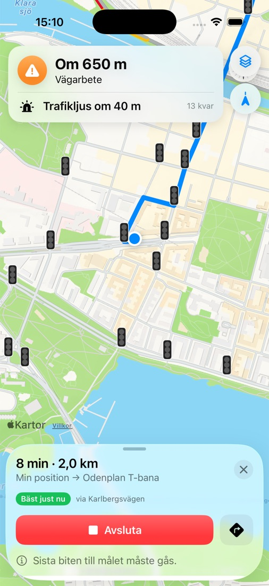
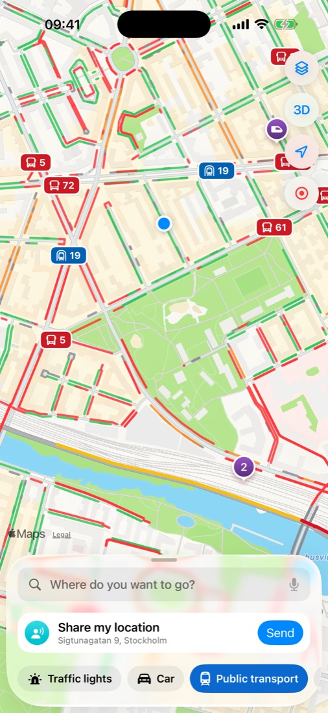

Schweden auf einer Karte, in Echtzeit.
360Maps ist für Reisen nach Schweden gemacht. Finde die sehenswerten Orte, fahre mit Bussen, Bahnen und Booten, sieh Verkehr, Wetter und Parkplätze und lass dir den Weg ansagen, in 28 Sprachen auf dem iPhone.
Was du auf der Karte siehst
Schalte ein, was du brauchst. Alles stammt aus offenen Daten von Behörden und Verkehrsunternehmen und wird aktualisiert, während du hinsiehst.
-
Sehenswürdigkeiten
Über 340 sehenswerte Orte in Schweden, mit Foto, Öffnungszeiten, Look Around und einem kurzen Text in deiner Sprache. Die Fotos stammen von Wikimedia Commons, die Texte von Wikipedia.
-
Ausgewählte Orte
Orte, die wir für Besucher auswählen, zum Beispiel die italienischen Espressobars, die Italiener in Stockholm empfehlen. Sie werden bei jeder Zoomstufe angezeigt.
-
Restaurants, Cafés und Bars
Jede Art in einer eigenen Farbe, mit Öffnungszeiten und einer Liste, wenn du auf eine Gruppe tippst. Rund 20.000 Orte in ganz Schweden.
-
Apotheken und Notaufnahmen
Apotheken und Notaufnahmen von Krankenhäusern in ganz Schweden, mit Öffnungszeiten. Im Notfall ruf die 112 an.
-
Badeplätze, Natur und Nordlicht
Strände mit der heutigen Wassertemperatur, Nationalparks, Naturschutzgebiete und Eisbahnen sowie die Chance, Nordlichter zu sehen.
-
Busse, U-Bahnen, Züge und Boote
Die Fahrzeuge bewegen sich mit ihrer Liniennummer über die Karte, in 15 Regionen (län). Rot ist Bus, Blau U-Bahn, Lila Zug und Türkis Boot.
-
Staus und Reisezeiten
Gemessene Reisezeiten auf Stockholms Hauptstraßen und in den Tunneln, jede Minute. Ein Stau wird als +2 Minuten gegenüber dem Normalwert angezeigt.
-
Straßenzustand
Schnee, Schneematsch und Eis auf den Straßen als Linien, mit Angaben dazu, was auf der Straße liegt und wann zuletzt geräumt wurde.
-
Regenradar
Aktueller Niederschlag vom Wetterradar des SMHI, alle fünf Minuten. Blau steht für leicht, Gelb und Rot für stark.
-
Störungen und Baustellen
Unfälle, Sperrungen und Baustellen von der schwedischen Verkehrsverwaltung, mit Ort und Zeit.
-
Verkehrskameras
Tippe auf eine Kamera, um die Straße zu sehen. Das Bild aktualisiert sich von selbst, während du hinsiehst.
-
Fähren und Schiffe
Die nächste Abfahrt der Straßenfähren der schwedischen Verkehrsverwaltung und Schiffe, die auf See unterwegs sind.
-
Parken am Ziel
Wenn du eine Fahrt mit dem Auto planst, siehst du Parkplätze in der Nähe deines Ziels, mit Anzahl der Plätze und Preis. Freie Plätze werden dort angezeigt, wo die Stadt sie teilt.
-
Ampeln auf der Strecke
Wo die nächste Ampel liegt, wenn du fährst. Farbe und Countdown folgen, sobald Städte ihre Signaldaten offen teilen.
-
Polizei, Krisinformation und SMHI
Vorfälle in deiner Nähe, wichtige öffentliche Bekanntmachungen und Wetterwarnungen.
So sieht es aus
Bilder aus der App, mit echten Daten aufgenommen. Die Screenshots zeigen die schwedische Version.



Von A nach B
- Auto
- ÖPNV
- Fahrrad
- Zu Fuß
Wähle, wie du reisen möchtest. 360Maps vergleicht die Routen mit dem aktuellen Verkehr und zeigt, was auf deinem Weg liegt: Staus, Straßenzustand, Baustellen, Fähren und Ampeln. Mit öffentlichen Verkehrsmitteln erhältst du Abfahrten, Verspätungen und Umstiege in ganz Schweden.
Bei einer Fahrt mit dem Auto, dem Fahrrad oder zu Fuß wird die nächste Abbiegung vorgelesen, auch bei gesperrtem Bildschirm. Wenn du falsch abbiegst, findet die App eine neue Route, und wenn sie eine findet, die mindestens drei Minuten schneller ist, sagt sie dir Bescheid. In der Nähe deines Ziels siehst du, wo du parken kannst.
Ein Tag unterwegs

Überrasch mich
Die App plant einen Tag von deinem Standort aus: Sehenswürdigkeiten und Parks, mit Mittagessen und Kaffee an Orten, die geöffnet sind. Wähle zu Fuß, Fahrrad oder öffentliche Verkehrsmittel und mische, bis der Tag zu dir passt.
Museen, Schlösser und Kirchen werden vor 17:00 Uhr eingeplant, weil die App ihre Öffnungszeiten nicht kennt.
Du willst einen Bus oder Zug erwischen? Tippe auf die Abfahrt und wähle „Rechtzeitig hinbringen“, dann sagt dir die App, wann du losgehen musst.
Gut zu wissen in Schweden
Notrufnummern nur einen Fingertipp entfernt, Sonnenaufgang und Sonnenuntergang von heute, die schwedischen Feiertage und was an ihnen schließt, Bezahlen und Trinkgeld, Systembolaget, Leitungswasser, Steckdosen und das Jedermannsrecht. Mit einem Kronen-Rechner zum Kurs der Europäischen Zentralbank und zwölf schwedischen Redewendungen, die laut vorgelesen werden, mit der Bedeutung in deiner Sprache.
Am Abend zeigt die App Museen und Sehenswürdigkeiten in deiner Nähe, die noch geöffnet sind, und wenn Regen naht, Museen und Kirchen, in die du stattdessen gehen kannst. Orte mit freiem Eintritt sind markiert.
Kostenlos und 360Maps Plus
Die Karte mit allen Ebenen, die Suche, öffentliche Verkehrsmittel, Fahrrad, Zu Fuß, „Überrasch mich“ und die Planung einer Autoroute sind kostenlos. Auch deine ersten drei Fahrten mit Autonavigation sind kostenlos.
Mit 360Maps Plus erhältst du die Autonavigation: Abbiegehinweise Schritt für Schritt per Sprachansage, Warnungen vor Staus, Eis und Baustellen und eine neue Route, wenn sich der Verkehr ändert. Und dazu:

Was die Fahrt kostet, und ein Wintercheck
Staugebühren und Brückenmaut entlang deiner Autoroute, berechnet für den Zeitpunkt, zu dem du sie passierst, und was es kostet, wenn du später losfährst.
Vom 1. November bis 30. April: Eis und Schnee entlang der Strecke, die Temperatur an deinem Ankunftsort zur Ankunftszeit und die Warnungen des SMHI.

Parkregeln in Stockholm
Zoome hinein, und die Bordsteine sind eingefärbt: grün, wo du parken darfst, orange, wo die Straße innerhalb eines Tages gereinigt wird, rot, wo gerade Parkverbot gilt, und grau, wo der Platz reserviert ist.
Nach den Vorschriften der Stadt. Es gelten die Schilder an der Straße.

Wo das Auto steht
Speichere, wo das Auto steht, und die App zeigt, was genau dort gilt: den aktuellen Preis, den vollständigen Tarif und wann die Straße gereinigt wird.
„Erinnere mich“ schickt dir am Abend davor und eine Stunde vor Beginn der Straßenreinigung eine Benachrichtigung.
Plus gibt es als eine Woche (kein Abo), monatlich, jährlich oder als Einmalkauf. Der App Store zeigt den Preis in deinem Land. Nutzungsbedingungen.
Offene Daten
Alles auf der Karte stammt aus offenen Daten schwedischer Behörden und Verkehrsunternehmen.
Zu den Quellen gehören: Trafiklab und Samtrafiken, SL, die schwedische Verkehrsverwaltung, SMHI, die schwedische Polizei, Krisinformation.se, die Stadt Stockholm, Wikipedia und © OpenStreetMap contributors. Alle Quellen und Lizenzen sind in der App unter „Quellen, Lizenzen und Datenschutz“ aufgeführt.
Support
Fehler gefunden, etwas auf der Karte vermisst oder eine Frage zur App? Schreib eine E-Mail an raztechsupport@icloud.com, wir antworten. Antworten auf häufige Fragen findest du auf der Supportseite.